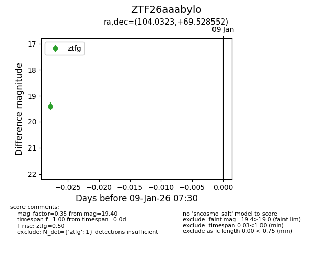
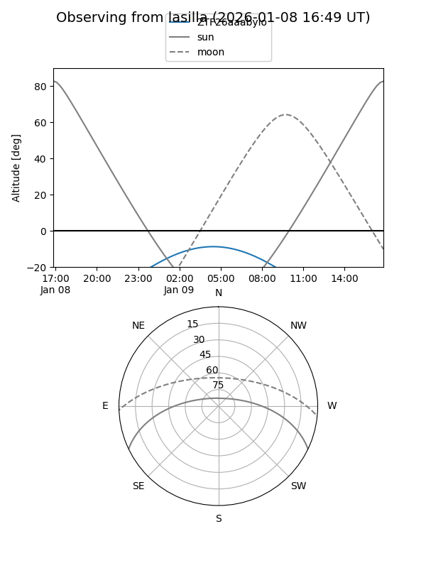
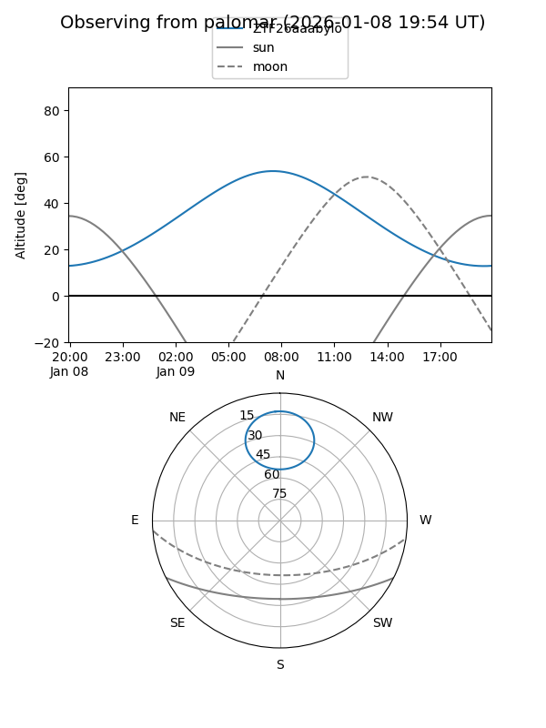

ZTF26aaabylo
Target ZTF26aaabylo at 2026-01-09 07:30
Aliases and brokers:
FINK:
Lasair:
ALeRCE:
alt names
ZTF26aaabylo (ztf,fink_ztf)
Coordinates:
equatorial (ra, dec) = 104.0323,+69.52855
equatorial (HMS+DMS) = 06:56:07.74,+69:31:42.79
galactic (l, b) = (145.7641,+25.69356)
Flags:
Photometry:
last ztfg=19.40
1 ztfg detections
Lightcurve

Visibility


Additional plots